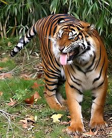
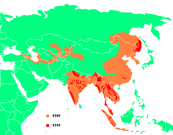
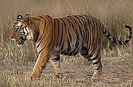
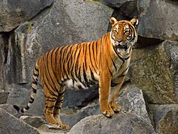
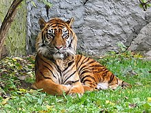

El tigre (Panthera tigris) es una de las especies de la subfamilia de los panterinos (familia Felidae) pertenecientes al género Panthera. Se encuentra solamente en el continente asiático; es un predador carnívoro y es la especie de félido más grande del mundo junto con el león pudiendo alcanzar ambos un tamaño comparable al de los fósiles de félidos de mayor tamaño.
Existen seis subespecies de tigre, de las cuales la de Bengala es la más numerosa; sus ejemplares constituyen cerca del 80 % de la población total de la especie; se encuentra en la India, Bangladés, Bután, Birmania y Nepal. Es una especie en peligro de extinción,4 y en la actualidad, la mayor parte de los tigres en el mundo viven en cautiverio. El tigre es el animal nacional de Bangladés y la India.
 El tamaño de los tigres y demás características varían de una subespecie a otra. En estado salvaje, los tigres machos tienen un peso que oscila entre los 47 y los 258 kg y una longitud de 190-330 cm incluyendo la cola,6789 que mide entre 60 y 110 cm, y de 61 hasta 122 cm de altura a la cruz. Mientras tanto, las hembras, mucho más pequeñas, tienen un peso de 24-167 kg y una longitud total de 177-275 cm.10 Actualmente, la subespecie más pequeña es el tigre de Malasia, mientras que la de mayor tamaño es el tigre de Bengala.11 La longitud total de los machos es de 270-310 cm mientras que la de las hembras es de 240-265 cm; la cola mide unos 85-100 cm de largo y la altura a los hombros de 58-110 cm
Los tigres adultos suelen ser ferozmente territoriales y cazan mucho. Las tigresas pueden tener un territorio de 20 km², mientras que el territorio de los machos es mucho más extenso, cubriendo un área promedio de 80 km²; sin embargo, el tamaño del territorio depende de las diferentes poblaciones del tigre, siendo más grandes los territorios pertenecientes a los tigres del sudeste de Rusia que los de cualquier otra subespecie de tigre. Los tigres machos pueden permitir la entrada de varias hembras a su territorio, hasta el punto de compartir una presa e incluso alimentarse después que la hembra (en el caso del león, ocurre exactamente todo lo contrario, pues es el macho dominante el primero en alimentarse); pero no toleran la entrada de otros tigres machos en su territorio.  a su naturaleza agresiva, los conflictos territoriales entre tigres son violentos y pueden terminar con la muerte de uno de los machos, aunque este tipo de muertes son menos frecuentes de lo que se cree, pues en la mayoría de las luchas por el territorio los machos terminan prácticamente ilesos. Para marcar su territorio el macho rocía la orina u otras secreciones sobre los árboles. Existen varias técnicas para estudiar al tigre en estado salvaje; hace algunos años las poblaciones de tigres eran calculadas por los moldes de yeso tomados de sus huellas. En la actualidad el collar radiotransmisor se ha vuelto un instrumento muy popular para el estudio del tigre en estado salvaje.
Normalmente los tigres buscan cazar herbívoros de gran tamaño; algunos ejemplos son los ciervos sambar, los cerdos salvajes, gaures, búfalos acuáticos y ganado doméstico. Se sabe que los tigres viejos o heridos son los más propensos a atacar al ganado doméstico o a seres humanos; estos tigres son llamados comúnmente "tigres ataca-hombres", lo que conduce muchas veces a que estos panterinos sean terriblemente eliminados por el hombre. Se sabe que en los pantanos de Sundarbans ubicados en Bangladés y el estado indio de Bengala, que es donde ocurren más incidentes como los mencionados, muchos tigres sanos y en perfectas condiciones han buscado atacar a seres humanos; esto en gran medida se debe a la enorme densidad demográfica humana en tales regiones, que provoca una superposición de los territorios de caza de los tigres y los territorios habitados por los humanos.
  